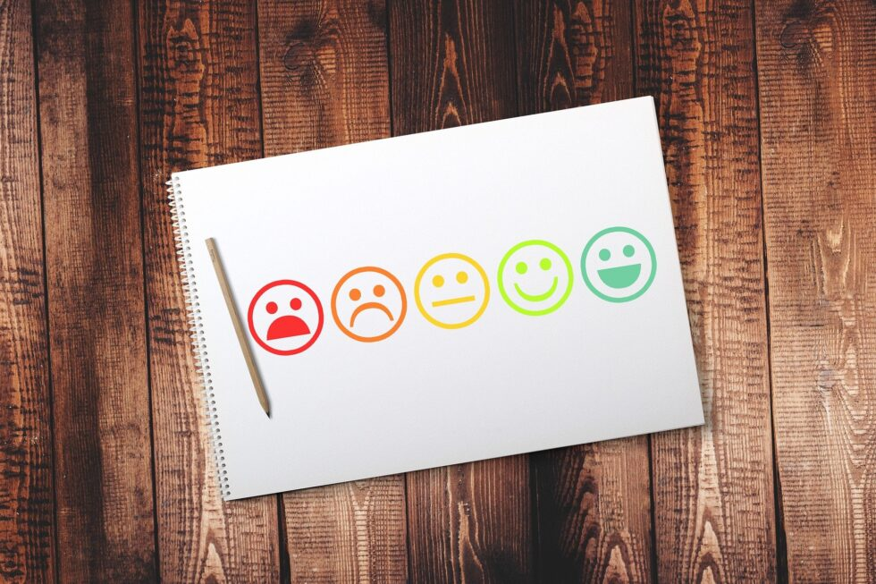
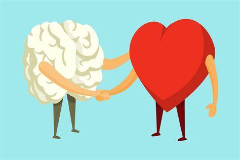
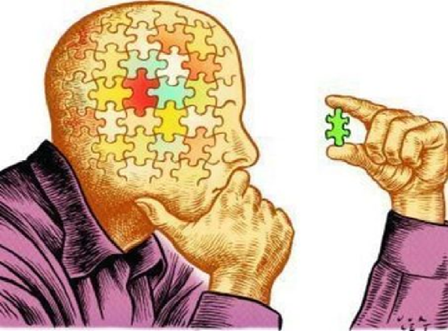

Tiene la capacidad de reconocer, comprender y gestionar las propias emociones (Autoconocimiento emocional - autocontrol emocional)
Tiene como habilidad analizar de manera clara y sistemática la información para tomar decisiones informadas. Se cuestiona la forma en que se hacen las cosas.
Permiten transmitir ideas, pensamientos y emociones de manera efectiva y clara. A través de la comunicación se pueden resolver problemas, entender a los demás y convivir éticamente (sensibilidad humana).
Busca comunicación efectiva, empatía y negociación para evitar tensiones que surgen entre grupos/equipos. Ser conciliadores y llegar a un término medio.
Requiere alto nivel personal, compromiso y disciplina para lograr objetivos comunes en equipo o grupo.
Debemos planificar y dirigir las iniciativas necesarias para adaptarnos y saber lidiar con el cambio. Es indispensable para el éxito y la sostenibilidad en cualquier entorno.
Organizar y controlar el tiempo dando prioridad a las tareas para maximizar la productividad y ser eficientes.
Adaptabilidad
Pensamiento creativo
Trabajo en equipo
Ética laboral
Pensamiento estratégico
Atención a los detalles
En el ámbito laboral las habilidades son de suma importancia a la hora de desempeñarse, la adaptabilidad en un entorno es muy beneficioso ya que te permite ser flexible a situaciones imprevistas y poder cambiar el rumbo de cuando alguna situación lo requiera.
Su importancia:
En el ámbito laboral, actualizarse frente a nuevas tecnologías y a las necesidades de la empresa y/o clientes.
Tipo de habilidad blanda: reflexiva.
A diferencia del pensamiento crítico, el pensamiento creativo está más centrado en la innovación y la capacidad de una persona para aportar nuevas ideas en su lugar de trabajo. No significa que sean opuestos; en realidad vendrían a ser complementarios. Esto puede ir desde tener otra perspectiva sobre un problema hasta dar una resolución, un nuevo resultado o algún enfoque a un método antes no probado.
Por ejemplo, si una empresa requiere del aporte de nuevas características para un producto, un colaborador con pensamiento creativo podría ver un lado que nadie más esté percibiendo y, con base en ello, aportar una idea novedosa que antes no se había explorado. Al pensamiento creativo también se le conoce como «Pensar fuera de la caja», lo que es ver más allá de lo obvio. Esta habilidad blanda también sirve cuando se trata de resolver problemas o enfrentar nuevos desafíos.
Tipo de habilidad blanda: interpersonal.
Seguro en todas las ofertas laborales encontrarás que solicitan a una persona con habilidades para trabajar en equipo. Esta también es una habilidad blanda relevante, pues más allá de tu función, es vital que sepas colaborar con los demás y seas capaz de transmitir tus fortalezas e ideas con los miembros de tu equipo.
Contar con esta habilidad blanda es tener una buena comunicación y una actitud positiva y servicial para ayudar a aquellos que lo necesiten. Esto también puede ir por el lado contrario, cuando es necesario que tú seas el que escuche alguna retroalimentación. Aquellas personas que tienen esta cualidad demuestran más capacidad de liderazgo y colaboración, sin importar que su rol requiera de actividades individuales.
La ética laboral se refiere a ser coherente con tus ideas y acciones, es algo de suma importancia ya que la empresa debe confiar en ti para darte mas proyectos. esto es fundamental para un creciemiento laboral bueno.
Por ejemplo si trabajamos en una empresa que maneja datos bancarios no podemos sutraer esa informacion de los clientes nunca.
El pensamiento estrategico es la habilidad de elaborar algoritmos los cuales nos permitiran optimizar nuestros procesos empresariales
esta habilidad busca que hay adaptabilidad. Va muy de la mano con el liderazgo, debido a la planeación y la comunicación, pero también la capacidad de enfrentarse a problemas diversos, ver oportunidades y detectar amenazas.
Consiste en ser observador en lo que realizamos no perder el vision ni los objetivos de nuestro proyecto
Debemos ser capazes de detectar errores en todo tipo de sistema y tener la habilidad de resolver la situacion con base en los conocimientos que tenemos de la carrera